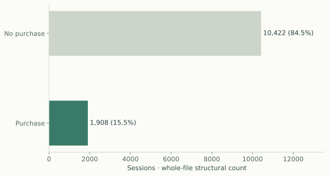
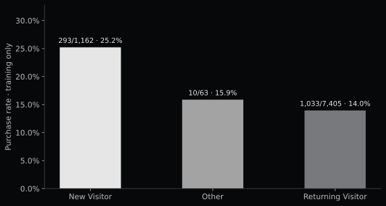
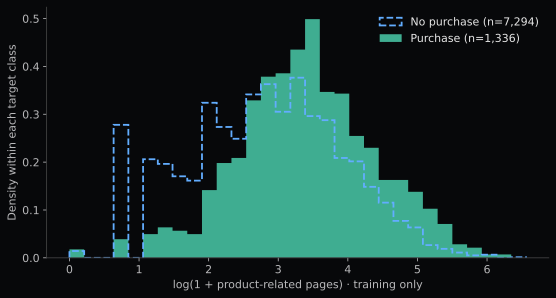
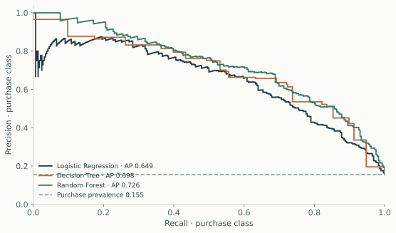
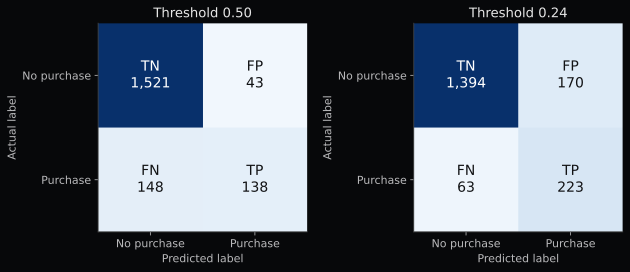
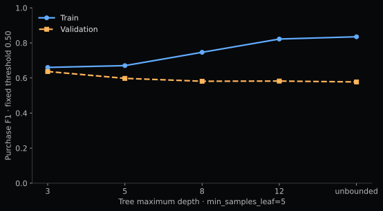
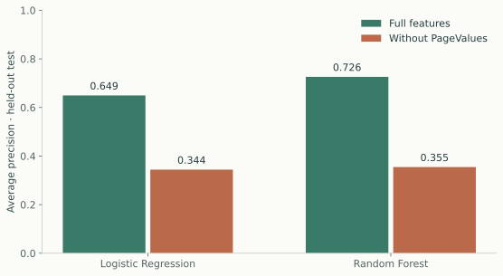

Majority baseline
Always predicts no purchase. Establishes how far accuracy can go without detecting a single buyer.
DummyClassifierstrategy = most_frequent
No search
No search
Weakness: ignores every browsing signal.
FROM SESSION SIGNALS TO PURCHASE INTENTION
Can recorded browsing behaviour identify sessions that end in a purchase?
One historical dataset. Three standard classifiers. A majority baseline. A careful look at what the evidence can—and cannot—tell us.
Read the findings Try the threshold lab ↗0.726average precision
Random Forest
Full features · final test partition
THE CATCHSession summaries are informative. Their availability early enough to act is a separate question.
Random Forest, selected on validation, achieved 0.726 average precision on the held-out test with full features, compared with 0.155 for the majority baseline. At the frozen 0.24 threshold, it detected 223 of 286 purchases, with 170 false alarms.
GENERATED RUN ss-b3055ee3-c246965fDATA SHA-256 b3055ee355f5…Machine-readable evidence ↗
| Model / features | Partition · threshold | n / buyers | AP | ROC-AUC | Precision | Recall | F1 | Accuracy | TN / FP / FN / TP |
|---|---|---|---|---|---|---|---|---|---|
| Random Forest · six_observable_inputs | test · 0.12 | 1850 / 286 | 0.293 | 0.714 | 0.215 | 0.857 | 0.344 | 0.495 | 670 / 894 / 41 / 245 |
The UCI Online Shoppers Purchasing Intention Dataset records browsing activity and whether the session ended in a purchase. We inspect the supplied file before using the source description as evidence.
12,330 sessions · 1,908 purchases
17 predictors + Revenue target
| Features | What they record | Treatment |
|---|---|---|
| Administrative, Informational, ProductRelated | Page counts for three browsing categories | Numeric |
| Administrative_Duration, Informational_Duration, ProductRelated_Duration | Total time spent in each page category | Numeric |
| BounceRates | Analytics measure of visits leaving without another request | Numeric |
| ExitRates | Analytics measure of page views that end a session | Numeric |
| PageValues | Average page value associated with visits before a transaction; timing needs scrutiny | Numeric; removal experiment |
| SpecialDay | Proximity to a special day, on a 0–1 scale | Numeric |
| Month | Month category; the file contains ten observed months | One-hot category |
| OperatingSystems, Browser, Region, TrafficType | Category codes, without meaningful ordered distances | One-hot categories |
| VisitorType | Returning_Visitor, New_Visitor, or Other | One-hot category |
| Weekend | Whether the visit occurred on a weekend | Explicit 0/1 |
0 missing cells · 0 infinite values · 0 negative numeric values · 125 complete duplicates preserved.
| Check · whole file | Observed finding / decision |
|---|---|
| Schema & target | 12,330 rows, 17 predictors + binary Revenue; source expectations match. |
| Missing / infinite / negative | 0 / 0 / 0 numeric negative values |
| Invalid values | 0 values outside [0,1] in rates, SpecialDay or Weekend; 0 noninteger page counts; 0 unexpected categories |
| Repeated observations | 125 extra complete duplicates; 125 extra identical predictor vectors. All retained. |
| Extreme browsing | ProductRelated max 705 pages; duration max 63,973.5. Descriptive whole-file audit; no clipping. |
| Provenance | Supplied locally; original download date unknown. SHA-256 recorded; original bytes preserved. |
Large counts and durations are unusual but plausible. We preserve source rows and large values, report the duplicates, and inspect training distributions. Numeric category codes are never treated as ordered measurements. Full quality report ↗

Structural counts above describe the entire file. The following exploratory comparisons use only the training partition; they do not use validation or test outcomes to choose preprocessing.

| Visitor type | Training sessions | Purchases | Purchase rate |
|---|---|---|---|
| New_Visitor | 1162 | 293 | 25.2% |
| Other | 63 | 10 | 15.9% |
| Returning_Visitor | 7405 | 1033 | 14.0% |

| Training target | Sessions | Median pages | 95th percentile | Maximum |
|---|---|---|---|---|
| No purchase | 7294 | 16 | 98 | 705 |
| Purchase | 1336 | 29 | 159.25 | 501 |
Every learned transformation sits inside a scikit-learn Pipeline and ColumnTransformer. Each CV fold fits its own preprocessing using only that fold’s training rows.
| Choice | Implementation | Why |
|---|---|---|
| Numeric missingness | Training median, if needed | Retain rows without learning from the holdout; no missing values observed here |
| Categorical missingness | Fixed __missing__ category | Make missingness explicit; no missing values observed here |
| Category encoding | OneHotEncoder; ignore unknown categories | Codes are labels, not distances; vocabulary is fitted on training folds |
| Logistic Regression scale | StandardScaler on numeric features | Different units otherwise distort regularization and optimization |
| Tree numeric scale | Original values | Threshold-based trees do not require standardization |
| Target and row identity | Explicit Revenue 0/1; source_row_id from original row order | Neither the target nor the identifier enters the predictors |
| Imbalance and extremes | Stratification; no resampling, class weights, or outlier removal | Keep the core comparison simple; inspect precision/recall and threshold choices |
A reference and three familiar classifiers are enough to test the question. Each gets the same source rows, feature contract and evaluation protocol.
Always predicts no purchase. Establishes how far accuracy can go without detecting a single buyer.
Weakness: ignores every browsing signal.
Fits a regularized linear relationship in log odds after scaling and category encoding.
Weakness: limited nonlinear interactions without engineered terms.
Recursively splits sessions into groups using feature thresholds; gives a readable rule structure.
Weakness: a deeper tree may overfit and vary with the sample.
Averages 150 randomized trees to reduce variance. A standard nonlinear comparator.
Weakness: harder to interpret as a whole than one tree or a linear model.
No advanced boosting, class weighting, resampling, or large parameter search. random_state = 42 wherever supported. Actual parameters and fitted category vocabularies are saved in the source bundle.
We hold out 15% for test, then take 15/85 of the remaining rows for validation. Both splits are stratified with seed 42. Exact source row IDs are saved and checked for complete, disjoint coverage.
| Partition | Sessions | Purchases | Purpose |
|---|---|---|---|
| Train | 8,630 | 1,336 | Fit preprocessing and tune with 3-fold CV |
| Validation | 1,850 | 286 | Select model and threshold |
| Test | 1,850 | 286 | Final frozen comparison only |
Average precision (AP)Purchase precision summarized over recall increments across thresholds. Primary ranking metric; not trapezoidal PR-AUC.
PrecisionOf the sessions predicted to purchase, how many actually did: TP / (TP + FP).
RecallOf the actual purchases, how many were detected: TP / (TP + FN).
F1Harmonic mean of precision and recall. Used for the illustrative threshold choice.
ROC-AUCRanking discrimination between a random buyer and non-buyer across thresholds.
AccuracyCorrect predictions / all sessions. Can reward the dominant non-purchase class.
Precision and recall use zero_division=0. A zero displayed when no positive predictions exist is an implementation convention; precision is mathematically undefined there. Single-class ROC-AUC would be undefined and disclosed. Model scores are not claimed to be calibrated probabilities. There is no known business cost ratio.
Random Forest was selected with validation AP 0.725. We take the highest validation AP, then prefer the simpler model when it is within 0.005 of the highest: Logistic Regression → Decision Tree → Random Forest. This practical tolerance is not a significance test. The validation F1 grid selected 0.24; ties use the larger threshold. All six fitted variants and this decision were frozen before any test predictions. No model was refitted on validation.
Inspect timestamp, parameters & evidence ↗Validation makes the choices. Test provides the final comparison. The tables include every primary classifier and both prespecified feature-removal variants, with purchase-class metrics and support.
| Model / features | Partition · threshold | n / buyers | AP | ROC-AUC | Precision | Recall | F1 | Accuracy | TN / FP / FN / TP |
|---|---|---|---|---|---|---|---|---|---|
| Dummy · full | validation · 0.50 | 1850 / 286 | 0.155 | 0.500 | 0.000 | 0.000 | 0.000 | 0.845 | 1564 / 0 / 286 / 0 |
| Logistic Regression · full | validation · 0.50 | 1850 / 286 | 0.649 | 0.894 | 0.734 | 0.357 | 0.480 | 0.881 | 1527 / 37 / 184 / 102 |
| Decision Tree · full | validation · 0.50 | 1850 / 286 | 0.684 | 0.912 | 0.738 | 0.503 | 0.599 | 0.896 | 1513 / 51 / 142 / 144 |
| Random Forest · full | validation · 0.50 | 1850 / 286 | 0.725 | 0.920 | 0.794 | 0.472 | 0.592 | 0.899 | 1529 / 35 / 151 / 135 |
| Logistic Regression · no_PageValues | validation · 0.50 | 1850 / 286 | 0.313 | 0.756 | 0.429 | 0.021 | 0.040 | 0.844 | 1556 / 8 / 280 / 6 |
| Random Forest · no_PageValues | validation · 0.50 | 1850 / 286 | 0.377 | 0.760 | 0.731 | 0.066 | 0.122 | 0.852 | 1557 / 7 / 267 / 19 |
The highest test AP among full-feature learned models belongs to Random Forest (0.726). Decision Tree improves test AP over Logistic Regression by 0.049; Random Forest by 0.077. These are descriptive differences on this split, without significance or operational-value claims. The selected model remains Random Forest; test rankings never revise the validation decision.
| Model / features | Partition · threshold | n / buyers | AP | ROC-AUC | Precision | Recall | F1 | Accuracy | TN / FP / FN / TP |
|---|---|---|---|---|---|---|---|---|---|
| Dummy · full | test · 0.50 | 1850 / 286 | 0.155 | 0.500 | 0.000 | 0.000 | 0.000 | 0.845 | 1564 / 0 / 286 / 0 |
| Logistic Regression · full | test · 0.50 | 1850 / 286 | 0.649 | 0.890 | 0.784 | 0.367 | 0.500 | 0.886 | 1535 / 29 / 181 / 105 |
| Decision Tree · full | test · 0.50 | 1850 / 286 | 0.698 | 0.919 | 0.749 | 0.531 | 0.622 | 0.900 | 1513 / 51 / 134 / 152 |
| Random Forest · full | test · 0.50 | 1850 / 286 | 0.726 | 0.919 | 0.762 | 0.483 | 0.591 | 0.897 | 1521 / 43 / 148 / 138 |
| Random Forest · full | test · 0.24 | 1850 / 286 | 0.726 | 0.919 | 0.567 | 0.780 | 0.657 | 0.874 | 1394 / 170 / 63 / 223 |
| Logistic Regression · no_PageValues | test · 0.50 | 1850 / 286 | 0.344 | 0.754 | 0.500 | 0.024 | 0.047 | 0.845 | 1557 / 7 / 279 / 7 |
| Random Forest · no_PageValues | test · 0.50 | 1850 / 286 | 0.355 | 0.753 | 0.556 | 0.070 | 0.124 | 0.848 | 1548 / 16 / 266 / 20 |
AP and ROC-AUC do not change when only the classification threshold changes. Dummy predicts no buyers at 0.50: precision is undefined and displayed as 0 by the zero_division convention; recall and F1 are 0.


| Test threshold | TN | FP | FN | TP | Recall | Precision |
|---|---|---|---|---|---|---|
| 0.50 | 1521 | 43 | 148 | 138 | 48.3% | 76.2% |
| 0.24 | 1394 | 170 | 63 | 223 | 78.0% | 56.7% |

| Maximum depth | Train F1 | Validation F1 |
|---|---|---|
| 3 | 0.660 | 0.637 |
| 5 | 0.671 | 0.598 |
| 8 | 0.747 | 0.582 |
| 12 | 0.822 | 0.583 |
| unbounded | 0.835 | 0.578 |
For Random Forest, full features, test at 0.24: false negatives missed 63/286 actual buyers (22.0%); false positives flagged 170/1564 non-buyers (10.9%). Of 393 predicted buyers, 170 did not purchase. Errors describe recorded outcomes, not visitor motives.
| Source row ID | Visitor type | Product pages | Product duration | PageValues | Actual | Score | Predicted |
|---|---|---|---|---|---|---|---|
| 384 | Returning_Visitor | 61 | 2258.4 | 2.81 | 0 | 0.383246 | 1 |
| 857 | Returning_Visitor | 27 | 520.3 | 8.50 | 0 | 0.577144 | 1 |
| 894 | Returning_Visitor | 38 | 1054.9 | 8.22 | 0 | 0.403394 | 1 |
| 1026 | Returning_Visitor | 83 | 1778.1 | 6.63 | 0 | 0.321572 | 1 |
| Source row ID | Visitor type | Product pages | Product duration | PageValues | Actual | Score | Predicted |
|---|---|---|---|---|---|---|---|
| 2746 | Returning_Visitor | 62 | 3657.1 | 9.03 | 1 | 0.180422 | 0 |
| 4407 | Returning_Visitor | 19 | 421.6 | 6.62 | 1 | 0.206613 | 0 |
| 4632 | Returning_Visitor | 38 | 1155.0 | 5.90 | 1 | 0.183728 | 0 |
| 5593 | Returning_Visitor | 5 | 136.1 | 0.00 | 1 | 0.078981 | 0 |
These are the first four source rows in each error category, sorted by original zero-based source_row_id. Scores are rounded only for display. Features are observed session summaries; we cannot infer why a visitor did or did not buy.
low: ProductRelated <= 10; medium: 10 < ProductRelated <= 29; high: ProductRelated > 29. Boundaries come from training tertiles and were reused on test.
| Grouping | Group | Sessions | Buyers | FP / non-buyers | FN / buyers | Precision | Recall |
|---|---|---|---|---|---|---|---|
| VisitorType | New_Visitor | 265 | 69 | 11 / 196 | 16 / 69 | 0.828 | 0.768 |
| VisitorType | Other | 11 | 3 | 0 / 8 | 0 / 3 | 1.000 | 1.000 |
| VisitorType | Returning_Visitor | 1574 | 214 | 159 / 1360 | 47 / 214 | 0.512 | 0.780 |
| ProductRelated_bin | low | 622 | 39 | 8 / 583 | 19 / 39 | 0.714 | 0.513 |
| ProductRelated_bin | medium | 633 | 107 | 45 / 526 | 19 / 107 | 0.662 | 0.822 |
| ProductRelated_bin | high | 595 | 140 | 117 / 455 | 25 / 140 | 0.496 | 0.821 |
Compare missed purchases using FN / buyers and false alarms using FP / non-buyers. Small denominators make these rates unstable. These exploratory subgroup counts do not establish discrimination, motives, or causal effects; no uncertainty intervals or significance claims are made.
Logistic Regression: validation AP 0.649 → 0.313 (change -0.335); test AP 0.649 → 0.344 (change -0.305). Random Forest: validation AP 0.725 → 0.377 (change -0.349); test AP 0.726 → 0.355 (change -0.371). This measures dependence on PageValues, not proof of target leakage. Removing it also does not establish real-time availability of the remaining session summaries.

The full-feature condition remains the prespecified primary study. Logistic Regression and Random Forest were retrained without PageValues using identical primary rows and their original bounded training-CV grids. Validation dependence was inspected before freezing; final test variants were evaluated without changing the primary model.
| Partitions | Shared vectors | Rows in first | Rows in second | Buyers in first / second |
|---|---|---|---|---|
| train ↔ validation | 29 | 48 | 32 | 0 / 0 |
| train ↔ test | 13 | 30 | 18 | 0 / 0 |
| validation ↔ test | 7 | 8 | 12 | 0 / 0 |
Identical predictors can straddle the primary split even though source row IDs are disjoint. This can make evaluation easier. We preserve the original split and add a separate group-aware sensitivity rather than silently deduplicating the data.
The secondary group test has 1850 sessions and 287 purchases; AP 0.751, F1 0.687. Twenty stratified group folds allocate 14/3/3 folds to train/validation/test. No identical predictor vectors cross these boundaries. Different rows and supports mean this is a sensitivity check, not a replacement estimate or a pure causal estimate of duplicate effects. The model, parameters and threshold were reused from the primary validation decision.
| Model / features | Partition · threshold | n / buyers | AP | ROC-AUC | Precision | Recall | F1 | Accuracy | TN / FP / FN / TP |
|---|---|---|---|---|---|---|---|---|---|
| Random Forest · full | group_validation · 0.24 | 1848 / 285 | 0.763 | 0.933 | 0.593 | 0.796 | 0.680 | 0.884 | 1407 / 156 / 58 / 227 |
| Random Forest · full | group_test · 0.24 | 1850 / 287 | 0.751 | 0.930 | 0.596 | 0.812 | 0.687 | 0.885 | 1405 / 158 / 54 / 233 |
Explore the selected model’s actual validation scores. A session is predicted to purchase when its score is greater than or equal to your threshold.
Loading the actual validation scores…
Use arrow keys for 0.01 steps. The marker is the frozen validation F1 choice. Scores are not calibrated purchase probabilities.
The observed counts will appear when validation data loads.
Lowering the threshold usually detects more buyers and creates more false alarms. Moving it does not retrain the model or change the official test results.
Inspect the underlying scores ↗In this historical dataset, recorded session summaries identify purchases better than always predicting no purchase. Validation-selected Random Forest with full features achieved held-out test AP 0.726 versus baseline 0.155, and purchase F1 0.657 at the frozen 0.24 threshold. It still missed 63 of 286 test purchases. This supports session-level discrimination on this split, with clear dependence on the recorded feature set; it does not establish early-session utility or conversion uplift.
These are recorded session summaries. Some signals may be known only after browsing progresses or ends. Neither the full-feature nor reduced-feature experiment proves an early-session decision is possible.
A random stratified split measures internal discrimination, not future-time or cross-site generalization. No external validation, conversion intervention, uplift test, or business impact study was performed.
Results come from one deterministic primary split and small grids. Differences are descriptive, without confidence intervals or significance tests. Duplicate and subgroup sensitivities help inspection but do not remove uncertainty.
Revenue records purchase occurrence. The file contains no customer price/quality preferences, purchase motives or product-quality labels. Scores are uncalibrated; the F1 threshold is illustrative, without known business costs.
The source bundle includes the real dataset, deterministic split IDs, complete CV candidates, unrounded row-level predictions, metrics, figures, code, notebooks, tests and deployment workflow.
View repository ↗python -m venv .venv
# Activate: .venv\Scripts\Activate.ps1 (PowerShell)
# or: source .venv/bin/activate (macOS / Linux)
python -m pip install -r requirements.txt
python -m src.run_all --data data/raw/online_shoppers_intention.csv
python -m pytest -q
python -m http.server 8000 --directory docsThe measured model-training and evaluation stage took 232.9 seconds on the implementation machine; runtime depends on hardware. Notebooks read and analyze the generated artifacts through shared source functions; the pipeline command performs the training. Run instructions and the exact dependency lock are included in the README.
Data integrity: b3055ee355f59134d851d32641183cb4a8b45def7124d2f50442a042f358e0d9
Dataset source metadata and CC BY 4.0 attribution were checked on 16 November 2026. The file was supplied locally; its original retrieval date is unknown. The checksum identifies the supplied bytes; it is not a claim of byte-for-byte comparison against a newly downloaded UCI archive.
The requester supplied the PRD and local CSV. Codex implemented the Python pipeline, website, notebooks, documentation and automated checks, and executed the verification recorded in the repository. No human review or contributor identities are asserted. Authors should add their actual names and accurately describe their own review before submission.
ShopperSenseA modest model comparison. An inspectable chain of evidence.
Back to the question ↑